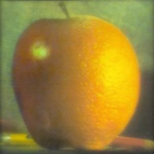
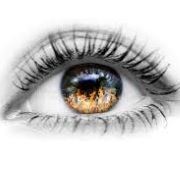
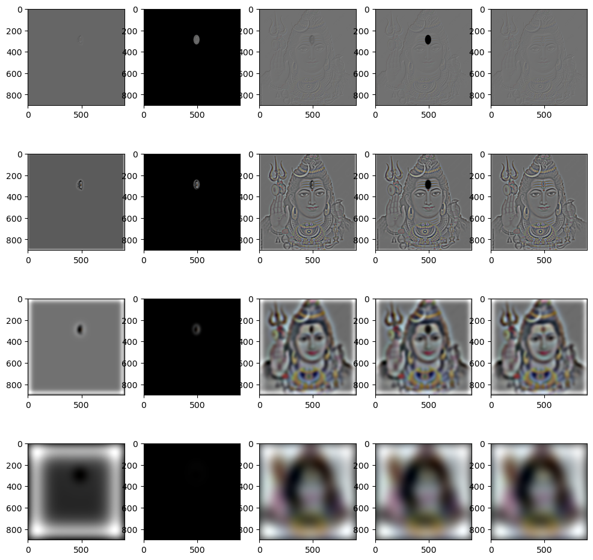
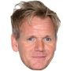
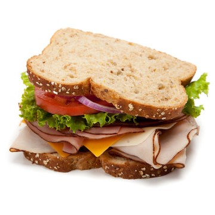
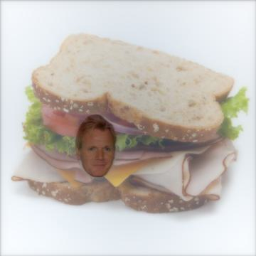

Multi-Resolution Blending
Approach Used and Results
The extra feature introduced, that is of interest, is skip, a parameter which enables us to skip the first
few images in the Gaussian stack for the mask. This way, we can avoid the mask edges with rougher cutoffs, which were
seen to give rougher transitions between the orange and apple in the actual image. Other than that, with an approach as explained,
Orange + Apple = Orapple. With depth \(7\), deviation \(4\) for the initial Gaussian, and first \(2\) mask blurs skipped.
Candidate Orapple (Left) compared with Real Orapple


Third Eye.
Original

Original

Idiot Sandwich
Original


Original

Observations
For the imageeverest.jpg, notice that while sharpening the image brings back some contrast and a large number of the mountains features, there is still an element of blur (a net loss of information) from the blurring. The edges are not as sharp as before, and the color contrast is a bit off. Thus we see that sharpening does not really create any new information/details, but only rephrases the existing information in a way that produces an apparently "sharper" image.